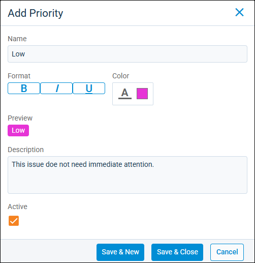
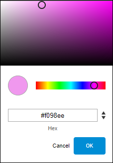
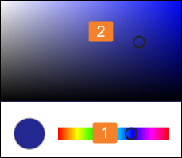

Source: https://rmxhelp.rentmanager.com/Topics/Express/Action/Issues-Priority-Add.htm
Add an Issue Priority
Service manager priorities are levels that you create to describe the urgency you assign to an issue (e.g., Critical, High, Medium, or Low). They also aid in filters and saved issue lists. You can add new priorities that users can select when filling out issues and format the priorities to add visual distinction.
Related Privileges
| Group | Privilege | Column |
|---|---|---|
| Service Manager | List manager | View, Edit |
For more information, refer to Control User Access.
To add a new issue priority, do the following:
-
Go to
 arrow_forward Services arrow_forward
arrow_forward Services arrow_forward  Service Setup arrow_forward Service Manager arrow_forward Priorities.
Service Setup arrow_forward Service Manager arrow_forward Priorities.
The Issue Priorities page displays. -
On the action bar to the right, click
 Add Priority.
Add Priority.
-
Enter a label for the new issue priority in the Name field.
-
In the Format section, check one or more optional font emphasis options (Bold, Italic, Underline) to specify how the Priority displays on the Issues page.
-
To change the display color of the Name, click the Color field. To set a color, click the color swatch. The color selection pop-up displays:

Either of the following methods can be used to set a color:
Option Description Select from the color palette
Click in the color bar to pick the color family, and then click in the palette to further refine your selection:

Enter a value
Use
 to the right of the field to switch between available values:
to the right of the field to switch between available values:-
Hex
-
RGB
-
HSL
Enter the value or hex code of the desired color.
Click OK to set the selected color.
-
-
Enter additional details regarding how the priority should be used in the Description field.
-
To finish, click Save & Close, or to create additional priorities, click Save & New.
The new priority is added to the Issue Priorities page and can be used on issues.